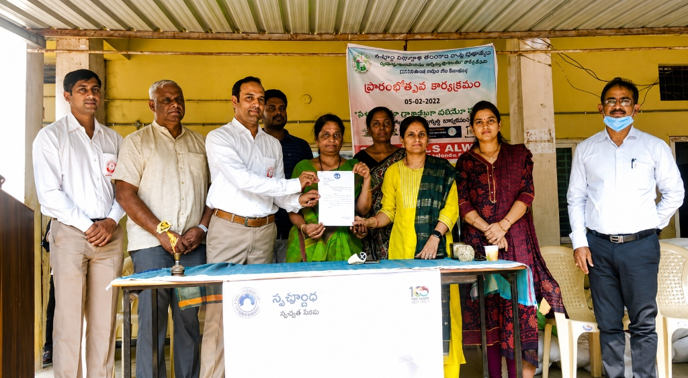
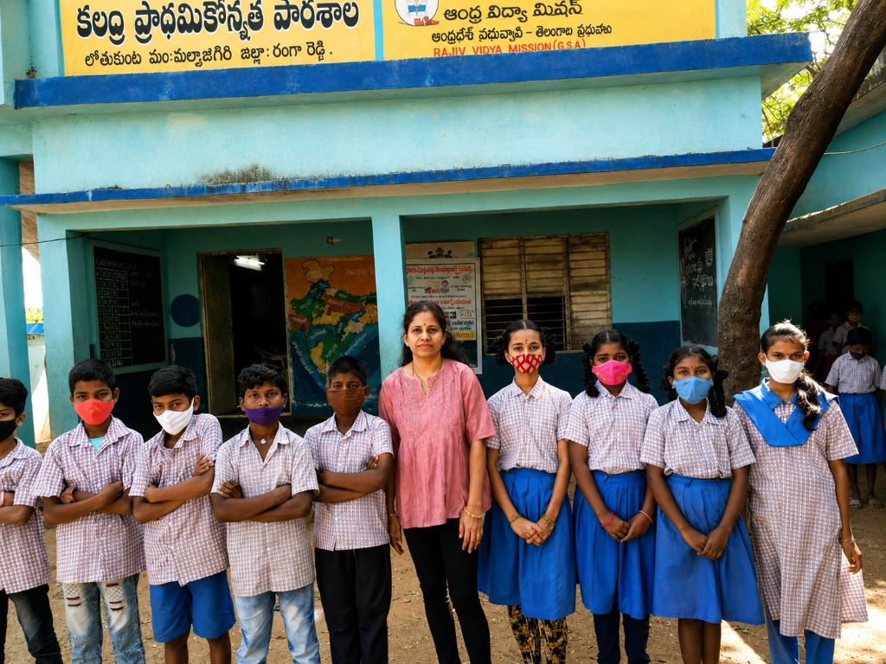
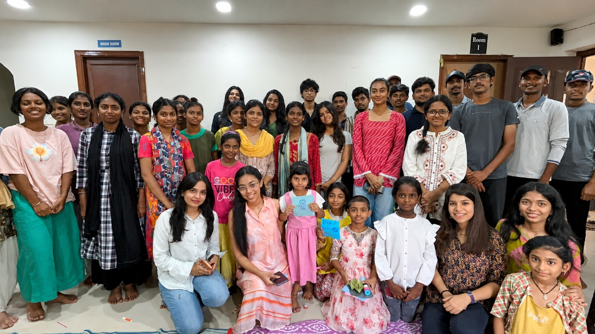
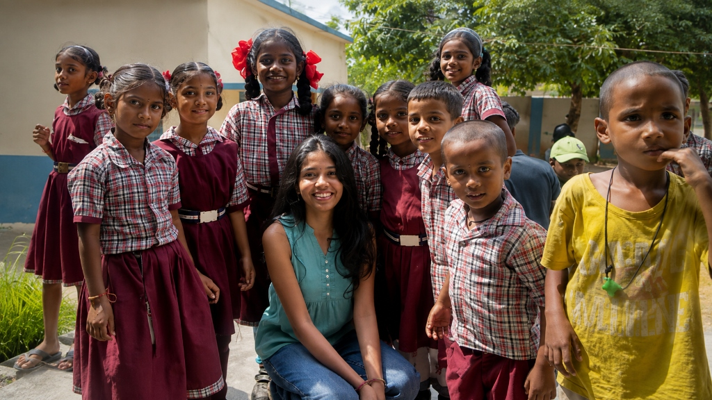
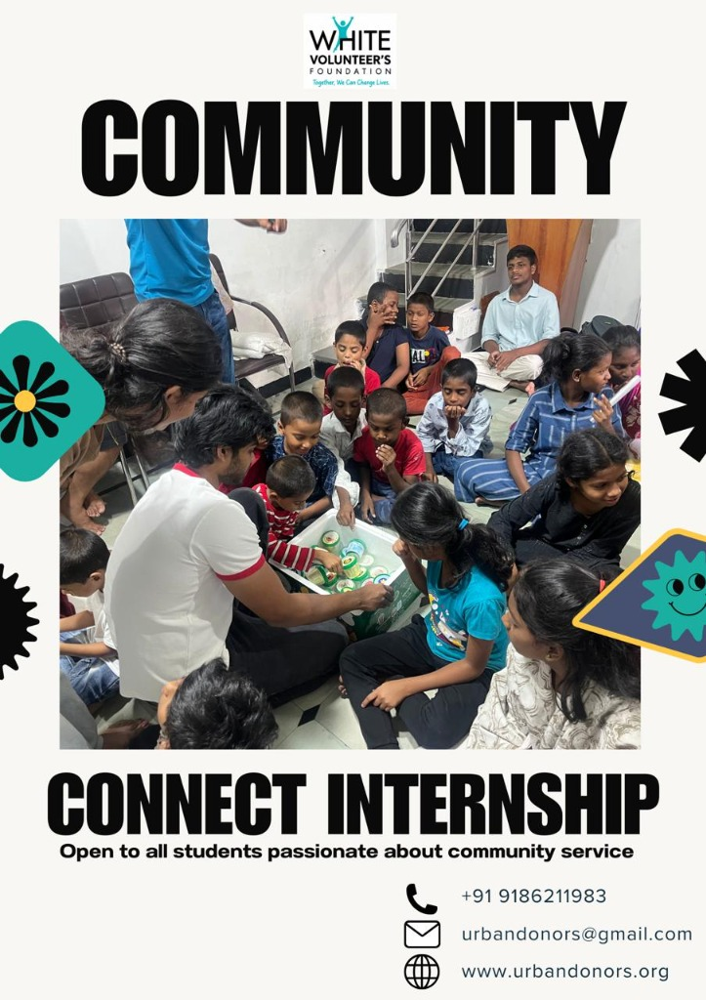
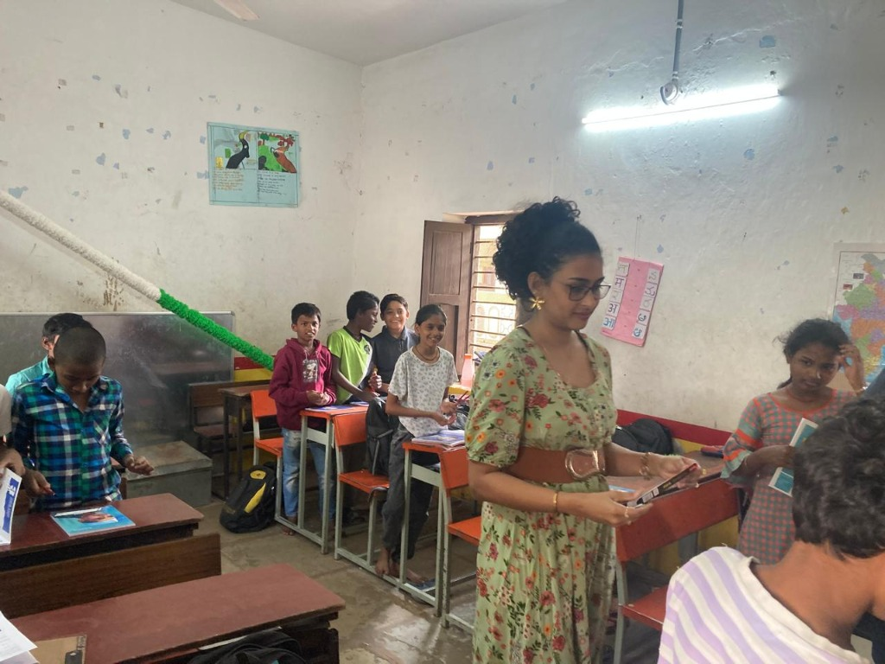
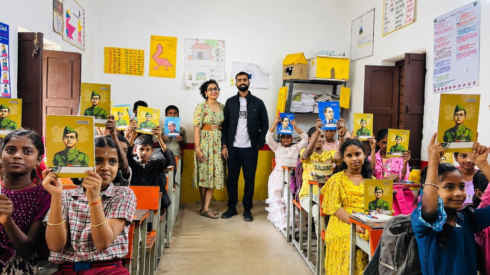
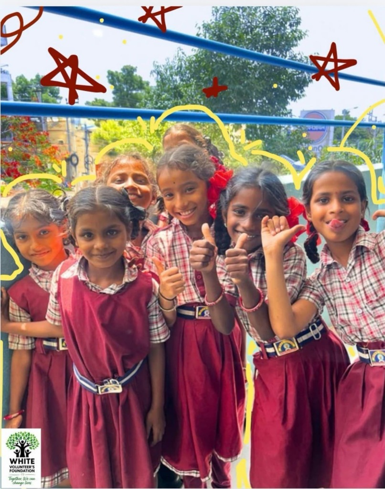
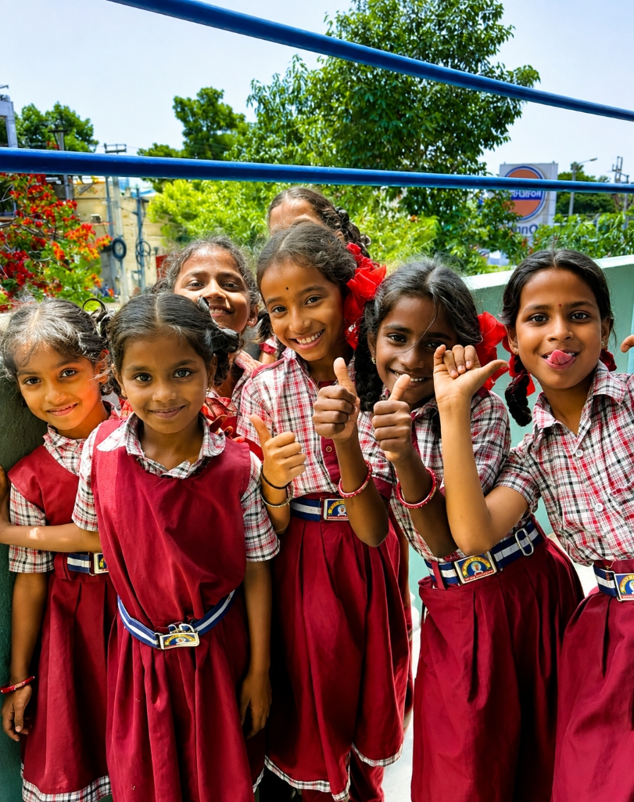
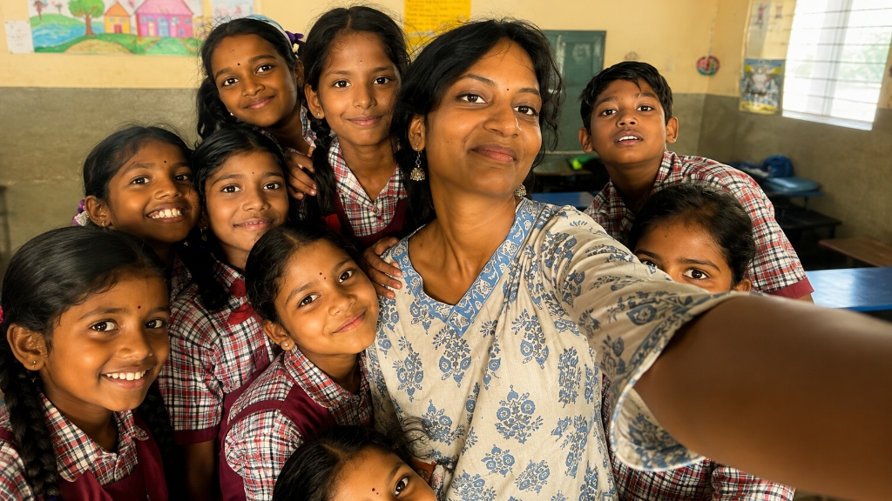

Witness how our morning nutrition, school renovation, stationery distribution, and youth training programs are transforming thousands of lives every day.
National and regional news coverage highlighting White Volunteers Foundation's impact on child nutrition and school attendance.
Hyderabad: What was started by Shekhar Maraveni as an initiative to supply milk to two schools in 2018 is today serving over 3,000+ government school students with daily morning nutrition (milk and Ragi Jaava), dramatically boosting classroom attendance, concentration, and child health.
రాజన్న సిరిసిల్ల జిల్లా గంభీరావ్పేటకు చెందిన లత మారవేణి, భర్త శేఖర్ మారవేణి సహకారంతో ప్రభుత్వ ప్రాథమిక పాఠశాలల్లోని పేద పిల్లలకు ఉదయం అల్పాహారం, పాలు అందిస్తూ ఆకలిని దూరం చేస్తున్నారు. అల్వాల్, యాప్రాల్ ప్రాంతాల్లో ప్రారంభమైన ఈ మహత్తర సేవ వేలాది మంది చిన్నారులకు అండగా నిలుస్తోంది.
Leading social-impact initiatives, child education drives, women empowerment workshops, and corporate CSR collaborations that create measurable, sustainable transformations across Telangana and nationwide.
Click any video below to watch the ground action directly on this page.

Delivering daily 150ml nutritious milk and breakfast to eliminate chronic hunger and power young minds for classroom learning.
Watch Video Document
Volunteers transforming old, dilapidated school buildings into clean, joyful, vibrant learning spaces with modern sanitation.
Watch Video Document
Equipping every underprivileged child with essential educational kits, uniforms, notebooks, and writing materials.
Watch Video Document
Interactive digital learning sessions, computer literacy workshops, and life skills coaching for high school students.
Watch Video Document
Highlights of youth volunteers distributing nutrition, conducting extracurricular fun activities, and mentoring students.
Watch Video DocumentAuthentic moments from our school visits, stationery distribution drives, and volunteer engagements. Click any image to view details.












Partner with us or volunteer your weekend to make a direct impact on children in government schools.
Supporting: Education & Nutrition Programs